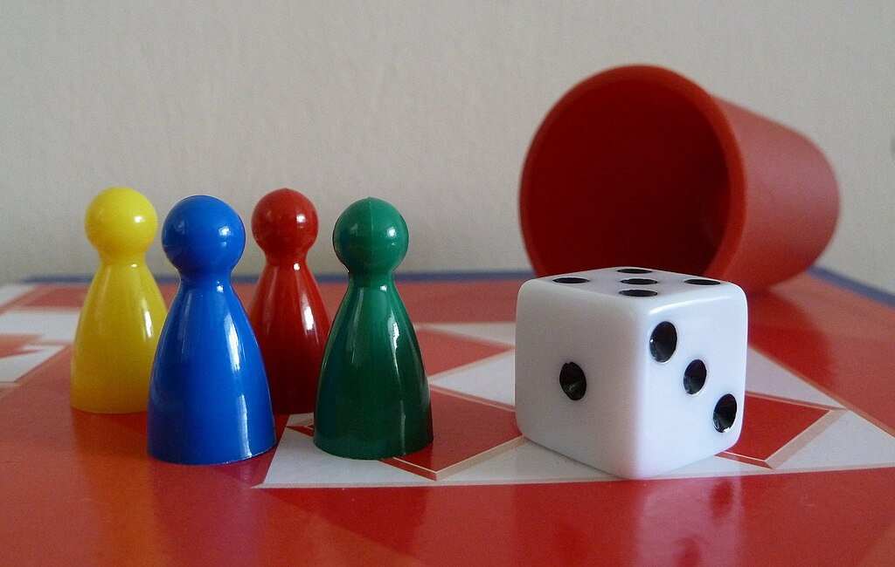

Jeux éducatifs Python - Ludu
Description : Ludu est un jeu éducatif développé en Python pour initier les utilisateurs aux concepts d’algorithmique. Le jeu permet de simuler des stratégies et d’analyser les parties pour renforcer l'apprentissage des bases du code et de la logique.
Fonctionnalités principales :
- Mode solo et multijoueur
- Analyse stratégique des parties
- Graphismes simples et intuitifs (Pygame)
- Rapports de parties en temps réel
Technologies utilisées :
- Python 3
- Pygame pour la partie graphique
- Algorithmes personnalisés pour l’intelligence du jeu
